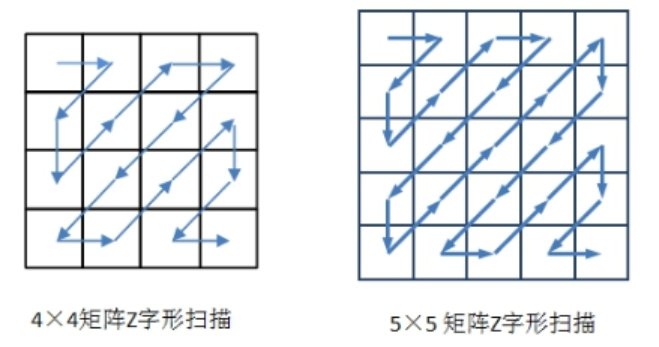
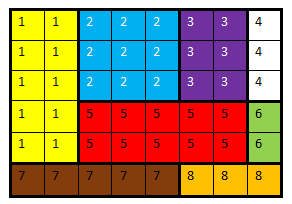
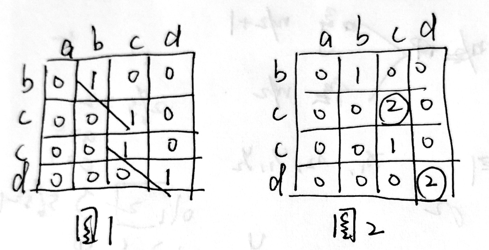
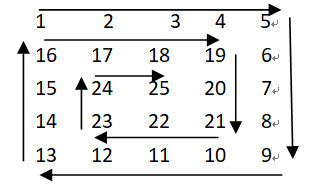

xdoj
==仅用于复习==
字符串数组练习
处理字符串
问题描述
从键盘输入一个字符串，将该字符串按下述要求处理后输出：
将ASCII码大于原首字符的各字符按原来相互间的顺序关系集中在原首字符的左边，
将ASCII码小于等于原首字符的各字符按升序集中在原首字符的右边。
输入说明
输入一行字符串,字符串c不长度超过100.
输出说明
输出处理后的一行字符串
输入样例
aQWERsdfg7654!@#$hjklTUIO3210X98aY
输出样例
sdfghjkla!#$0123456789@EIOQRTUWXYa
1 |
|
寻找最长的行
问题描述
寻找若干行文本中最长的一行
输入说明
输入为多个字符串(每个字符串长度不超过100个字符)，每个字符串占一行，输入的行为“end”时表示输入结束
输出说明
输出其中最长的一行长度后换行再输出最长行的内容，如果最长行不止一个，则输出其中的第一行。
输入样例
1 | abce |
输出样例
9
abdf dlfd
1 |
|
字符串压缩
问题描述
有一种简单的字符串压缩算法，对于字符串中连续出现的同一个英文字符，用该字符加上连续出现的次数来表示（连续出现次数小于3时不压缩）。
例如，字符串aaaaabbbabaaaaaaaaaaaaabbbb可压缩为a5b3aba13b4。
请设计一个程序，将采用该压缩方法得到的字符串解压缩，还原出原字符串并输出。
输入说明
输入数据为一个字符串（长度不大于50，只包含字母和数字），表示压缩后的字符串
输出说明
在一行上输出解压缩后的英文字符串（长度不超过100），最后换行。
输入样例
a5b3aba13b4
输出样例
aaaaabbbabaaaaaaaaaaaaabbbb
1 |
|
一维二维数组练习
0-1矩阵
问题描述
查找一个只包含0和1的矩阵中每行最长的连续1序列。
输入说明
输入第一行为两个整数m和n(0<=m,n<=100)表示二维数组行数和列数，其后为m行数据，每行n个整数（0或1），输入数据中不会出现同一行有两个最长1序列的情况。
输出说明
找出每一行最长的连续1序列，输出其起始位置(从0开始计算)和结束位置(从0开始计算)，如果这一行没有1则输出两个-1,然后换行。
输入样例
5 6
1 0 0 1 1 0
0 0 0 0 0 0
1 1 1 1 1 1
1 1 1 0 1 1
0 0 1 1 0 0
输出样例
3 4
-1 -1
0 5
0 2
2 3
1 |
|
等差数列
问题描述
请写一个程序，判断给定整数序列能否构成一个等差数列。
输入说明
输入数据由两行构成，第一行只有一个整数n（n<100），表示序列长度（该序列中整数的个数）；
第二行为n个整数，每个整数的取值区间都为[-32768~32767]，整数之间以空格间隔。
输出说明
对输入数据进行判断，不能构成等差数列输出“no”，能构成等差数列输出表示数列公差（相邻两项的差）的绝对值的一个整数。
输入样例
样例1输入
6
23 15 4 18 35 11
样例2输入
5
2 6 8 4 10
输出样例
样例1输出
no
样例2输出
2
1 |
|
马鞍点
问题描述
若一个矩阵中的某元素在其所在行最小而在其所在列最大，则该元素为矩阵的一个马鞍点。
请写一个程序，找出给定矩阵的马鞍点。
输入说明
输入数据第一行只有两个整数m和n（0<m<100,0<n<100），分别表示矩阵的行数和列数；
接下来的m行、每行n个整数表示矩阵元素（矩阵中的元素互不相同），整数之间以空格间隔。
输出说明
在一行上输出马鞍点的行号、列号（行号和列号从0开始计数）及元素的值（用一个空格分隔），之后换行；
若不存在马鞍点，则输出一个字符串“no”后换行。
输入样例
4 3
11 13 121
407 72 88
23 58 1
134 30 62
输出样例
1 1 72
输入样例
2 2
1 1
1 1
输出样例
no
1 |
|
指针练习
成绩处理
描述
输入5个学生，4门课成绩，二维数组stu表示，行标表示学生，列标表示课程成绩.
使用指针完成地址传递，主函数完成数组输入和输出。
分别编写函数aver()、fals()和well()完成：
求第一门课的平均分；
统计有2门以上课程不及格的同学人数；
平均成绩在90分以上或者全部课程成绩在85分以上的同学视为优秀，统计人数，
输入说明
输入二维浮点型数组stu
输出说明
输出第一门课程平均分(保留1位小数)、2门以上不及格人数和成绩优秀人数，数据之间空一格。
输入样例
85 73 59 92
93 95 89 88
86 88 88 87
59 51 52 68
78 32 59 91
输出样例
80.2 2 2
1 |
|
元素放置
描述
定义一个一维整形数组num[50]，输入正整数m、n（2≤m≤n≤7），输入一个m*n整形矩阵（值小于100）
编写函数place()完成矩阵元素S型放置，从小到大排列
使用指针完成地址传递，主函数完成数组输入和输出。
输入说明
输入正整数m和n（2≤m≤n≤7），输入一个m*n整形矩阵，含m*n个元素（值小于100）。
输出说明
格式输出：按行输出处理后的矩阵，S型排列，%3d，每行换行，最后一行不换行。
输入样例
3 3
15 14 21 34 22 37 40 16 50
输出样例
16 15 14
21 22 34
50 40 37
提示
使用指针作形参，实现地址传递，S型排列，%3d，每行换行，最后一行不换行。
1 |
|
字符统计
描述
定义一个一维字符数组string[100]，输入一个字符串，含N个字符（N≤100）
定义一个整形数组num[5]，用于存放统计结果数据
编写函数count()统计字符串中大写字母、小写字母、空格、数字以及其他字符的个数
使用指针完成地址传递，主函数完成数组输入和统计结果输出。
输入说明
输入一行字符串，100个以内。
输出说明
格式输出：输出大写字母、小写字母、空格、数字以及其他字符的个数信息，数据之间空一格。
输入样例
A 3cp &! 91 tD M
输出样例
3 3 5 3 2
提示
使用指针作形参，实现地址传递，输出数据之间空一格。
1 |
|
最长单词的长度
描述
给定一个英文句子，统计这个句子中最长单词的长度，并在屏幕上输出。
输入说明
从键盘输入一个英文句子，句子中只含有英文字符和空格，句子以’.’结束。句子总长不超过100个字符。
输出说明
输出一个整数，表示这个句子中最长单词的长度。允许句子中有相同长度的单词。
| 输入样例 | 输出样例 |
|---|---|
| I am a student. | 7 |
| The cat gets a job. | 4 |
1 |
|
判断字符串是否是回文
描述
给定一个字符串，判断该字符串是否是回文，并在屏幕上输出判断结果。如“abcba”即是回文。
输入说明
从键盘输入一个字符串，该字符串中字符可以是字母、数字和空格，字母区分大小写。字符串总长不超过100个字符。
输出说明
若该字符串是回文，则输出yes，否则输出no。
| 输入样例 | 输出样例 |
|---|---|
| abcba | yes |
| Abccba | no |
1 |
|
数组加强练习
灰度直方图
问题描述
一幅m×n的灰度图像可以用一个二维矩阵表示，矩阵中的每个元素表示对应像素的灰度值。
灰度直方图表示图像中具有每种灰度级的象素的个数，反映图像中每种灰度出现的频率。
假设图像灰度为16级（灰度值从0-15），现给出一个矩阵表示的灰度图像，输出各级灰度的像素个数。
输入说明
输入数据第一行为两个整数m 和n分别表示图像的宽度和高度（0<=m,n<=256），其后是n行数据，每行m个整数，分别表示图像各个像素的灰度值。
输出说明
输出n行数据，每行数据由两个整数组成，分别表示灰度级和该灰度级像素个数，整数之间用空格分隔，灰度级输出顺序为从低到高，
如果某灰度级像素个数为0，则不输出该灰度级的统计结果。
输入样例
1 | 5 4 |
输出样例
1 | 0 2 |
1 |
|
图像旋转
问题描述
旋转是图像处理的基本操作，在这个问题中，你需要将一个图像顺时针旋转90度。
计算机中的图像可以用一个矩阵来表示，为了旋转一个图像，只需要将对应的矩阵旋转即可。例如，下面的矩阵（a）表示原始图像，矩阵（b）表示顺时针旋转90度后的图像。
1 | 1 5 3 ---------------> 3 1 |
输入说明
输入的第一行包含两个整数n和m，分别表示图像矩阵的行数和列数。1 ≤ n, m ≤ 100。
接下来n行，每行包含m个非负整数，表示输入的图像，整数之间用空格分隔。
输出说明
输出m行，每行n个整数，表示顺时针旋转90度之后的矩阵，元素之间用空格分隔。
输入样例
1 | 2 3 |
输出样例
1 | 3 1 |
1 |
|
Z字形扫描
问题描述
在图像编码的算法中，需要将一个给定的方形矩阵进行Z字形扫描(Zigzag Scan)。给定一个m×n的矩阵，Z字形扫描的过程如下图所示。
输入说明
数据的第一行为整数n(n<100)，表示矩阵的行和列数；接下来的n行数据，每行分别为n个整数值(每个整数值都不超过1000)，即矩阵的值
输出说明
在一行上输出Z字形扫描得到的整数序列，整数之间用空格分隔
输入样例
1 | 4 |
输出样例
1 | 1 5 3 9 7 3 9 5 4 7 3 6 6 4 1 3 |
1 |
|
消除类游戏
问题描述
消除类游戏是深受大众欢迎的一种游戏，游戏在一个包含有n行m列的游戏棋盘上进行，棋盘的每一行每一列的方格上放着一个有颜色的棋子，当一行或一列上有连续三个或更多的相同颜色的棋子时，这些棋子都被消除。当有多处可以被消除时，这些地方的棋子将同时被消除。
现在给你一个n行m列的棋盘，棋盘中的每一个方格上有一个棋子，请给出经过一次消除后的棋盘。
请注意：一个棋子可能在某一行和某一列同时被消除。
输入格式
输入的第一行包含两个整数n, m，用空格分隔，分别表示棋盘的行数和列数。
接下来n行，每行m个整数，用空格分隔，分别表示每一个方格中的棋子的颜色。颜色使用1至9编号。
输出格式
输出n行，每行m个整数，相邻的整数之间使用一个空格分隔，表示经过一次消除后的棋盘。如果一个方格中的棋子被消除，则对应的方格输出0，否则输出棋子的颜色编号。
样例输入1
1 | 4 5 |
样例输出1
1 | 2 2 3 0 2 |
样例输入2
1 | 4 5 |
样例输出2
1 | 2 2 3 0 2 |
评测用例规模与约定
所有的评测用例满足：1 ≤ n, m ≤ 30。
1 |
|
相邻区域
问题描述
一个n行m列的矩阵被划分成t个矩形区域，分别用数字1-t来标识，同一个区域内的元素都用同一个数字标识。如下图所示，一个6行8列的矩阵被分成8个矩形区域，分别用编号1-8标识。当两个小区域之间公用一条边时，称这两个区域相邻，例如下图中区域5的相邻区域有6个，分别为1,2,3,6,7,8，但4并不是它的相邻区域。请写一个程序找出区域k的所有相邻区域。

输入说明
输入第一行为四个整数n，m， t，k，整数之间用空格分隔。n表示矩阵行数（n<20），m表示矩阵列数（m<20），t表示矩阵被划分为t个矩形区域（0<t<50），k为其中某个区域的编号（1<=k<=t）。接下来是n行数据，每行m个整数，表示矩阵内各个元素所在的区域，整数之间用空格分隔。
输出说明
输出为一个整数，表示与k相邻的区域个数
输入样例
1 | 6 8 8 5 |
输出样例
6
1 |
|
画图
问题描述
在一个定义了直角坐标系的纸上，画一个(x1,y1)到(x2,y2)的矩形，指将横坐标范围从x1到x2，纵坐标范围从y1到y2之间的区域涂上颜色。
下图给出了一个画了两个矩形的例子。第一个矩形是(1,1) 到(4, 4)，用绿色和紫色表示。第二个矩形是(2, 3)到(6, 5)，用蓝色和紫色表示。

图中，一共有15个单位的面积被涂上颜色，其中紫色部分被涂了两次，但在计算面积时只计算一次。在实际的涂色过程中，所有的矩形 都涂成统一的颜色，图中显示不同颜色仅为说明方便。给出所有要画的矩形，请问总共有多少个单位的面积被涂上颜色。
输入说明
输入的第一行包含一个整数n，表示要画的矩形的个数，1<=n<=100
接下来n行，每行4个非负整数，分别表示要画的矩形的左下角的横坐标与纵坐标，以及右上角的横坐标与纵坐标。0<=横坐标、纵坐标<=100。
输出说明
输出一个整数，表示有多少个单位的面积被涂上颜色。
输入样例
1 | 2 |
输出样例
15
1 |
|
矩阵相乘
描述
输入2×3矩阵A和3×2矩阵B各元素值，计算2×2矩阵C并输出其结果，矩阵相乘公式如下：Cmn=Amp*Bpn
输入说明
输入整形数据
输出说明
格式输出：输出矩阵A、B和A*B的结果，矩阵形式，分行分列输出，矩阵之间空一行。
提示
采用三重循环结构实现计算过程，数据输出格式%5d。
输入样例
1 | 1 2 3 4 5 6 |
输出样例
1 | 1 2 3 |
1 |
|
目录操作
问题描述
在操作系统中，文件系统一般采用层次化的组织形式，由目录（或者文件夹）和文件构成，形成一棵树的形状。
有一个特殊的目录被称为根目录，是整个文件系统形成的这棵树的根节点，在类Linux系统中用一个单独的 “/”符号表示。
因此一个目录的绝对路径可以表示为“/d2/d3”这样的形式。
当前目录表示用户目前正在工作的目录。为了切换到文件系统中的某个目录，可以使用“cd”命令。
现在给出初始时的当前目录和一系列目录操作指令，请给出操作完成后的当前目录。
输入说明
第一行包含一个字符串，表示当前目录。
后续若干行，每行包含一个字符串，表示需要进行的目录切换命令。
最后一行为pwd命令，表示输出当前目录
注意：
- 所有目录的名字只包含小写字母和数字，cd命令和pwd命令也都是小写。最长目录长度不超过200个字符。
- 当前目录已经是根目录时，cd .. 和cd /不会产生任何作用
输出说明
输出一个字符串，表示经过一系列目录操作后的当前目录
输入样例
1 | /d2/d3/d7 |
输出样例
1 | /d1/d6/d4/d5 |
1 |
|
字符串相似度
问题描述
最长公共子串指给定的两个字符串之间最长的相同子字符串（忽略大小写），最长公共子串长度可用来定义字符串相似度。
现给出两个字符串S1和S2，S1的长度为Len1，S2的长度为Len2，假设S1和S2的最长公共子串长度为LCS，则两个字符串的相似度定义为2
现给出两个字符串，请计算它们的相似度结果保留3位小数。
输入说明
输入为两行，分别表示两个字符串S1和S2，每个字符串长度不超过100个字符，所有字符均为可打印字符，包括大小写字母，标点符号和空格。
输出说明
输出两个字符串的相似度，结果四舍五入保留3位小数。
输入样例1
1 | App |
输出样例1
1 | 0.750 |
输入样例2
1 | apple |
输出样例2
1 | 0.714 |

图一是将两个字符串放在矩阵中比较,相同的赋值1,然后找到斜着方向的最大长度,但处理斜方向的最大长度有点麻烦.所以改进为图二.
图二是当匹配到相同字符时,就将其横纵坐标减一的值加一赋值到该位置,在比较的同时可以完成对长度的统计,之后只要搜索矩阵中的最大值就行了.(嫖zjx大佬的思路)
1 |
|
字符串查找
问题描述
给出一个字符串和多行文字，输出在这些文字中出现了指定字符串的行。
程序还需要支持大小写敏感选项：
当选项打开时，表示同一个字母的大写和小写看作不同的字符；
当选项关闭时，表示同一个字母的大写和小写看作相同的字符。
输入说明
输入数据第一行包含一个字符串s，由大小写英文字母组成，长度不超过100。
第二行包含一个数字，表示大小写敏感选项。当数字为0时表示大小写不敏感，当数字为1时表示大小写敏感。
第三行包含一个整数n，表示给出的文字行数。
接下来n行，每行包含一个字符串，字符串由大小写英文字母组成，不含空格和其他字符。每个字符串长度不超过100。
输出说明
输出多行，每行包含一个字符串，按出现的顺序依次给出那些包含了字符串s的行。
输入样例
1 | Hello |
输出样例
1 | HelloWorld |
1 |
|
表达式求值
问题描述
表达式由两个非负整数x，y和一个运算符op构成，求表达式的值。
这两个整数和运算符的顺序是随机的，可能是”x op y”， “op x y”或者 “x y op”，例如，“25 + 3”表示25加3，“5 30 *” 表示5乘以30，“/ 600 15”表示600除以15。
输入说明
输入为一个表达式，表达式由两个非负整数x，y和一个运算符op构成，x，y和op之间以空格分隔，但顺序不确定。
x和y均不大于10000000，op可以是+，-,*，/，%中的任意一种，分表表示加法，减法，乘法，除法和求余。
除法按整数除法求值，输入数据保证除法和求余运算的y值不为0。
输出说明
输出表达式的值。
输入样例
样例1输入5 20 *
样例2输入4 + 8
样例3输入/ 8 4
输出样例
样例1输出100
样例2输出12
样例3输出2
1 |
|
结构体
结构体这里的方法都有点U•ェ•U,主要是冒泡实在是太好用了pia!><,尤其是以一个因素排一个东西时,不影响另一个因素的排序,然后我就U•ェ•U到n个冒泡排完,当然选择也可以,但是冒泡我用熟了:-).
==大家最好还是不要这样,像什么一个main函数出现4个冒泡,简直就是老师看了想打人系列==
复试筛选
问题描述
考研初试成绩公布后需要对m个学生的成绩进行排序，筛选出可以进入复试的前n名学生。
排序规则为首先按照总分排序，总分相同则按英语单科成绩排序，总分和英语成绩也相同时考号小者排在前面。
现给出这m个学生的考研初试成绩，请筛选出可以进入复试的n名学生并按照排名从高到低的顺序依次输出。
输入说明
输入为m+1行，第一行为两个整数m和n，分别表示总人数和可以进入复试人数，m和n之间用空格分隔，0<n<m<200。
接下来为m行数据，每行包括三项信息，分别表示一个学生的考号（长度不超过20的字符串）、总成绩（小于500的整数）和英语单科成绩（小于100的整数），这三项之间用空格分隔。
输出说明
按排名从高到低的顺序输出进入复试的这n名学生的信息。
输入样例
1 | 5 3 |
输出样例
1 | XD20160005 360 75 |
1 |
|
文件排序
排序规则：
- 日期优先，最后修改的排在前面
- 当修改日期相同时，大的文件排在前面。
输入说明
第一行为一个数字 n，n 表示共有 n 个待排序的文件， 1≤ n≤ 100。
接下来是 n 行，每行包含一个文件的修改日期和文件大小，这两个字段之间用空格分隔。
文件修改日期包含年、月、日，表示年、月、日的整数之间用“/”分隔，格式为“年/月/ 日”。
年份的数值在 1960-2018 之间；月份的数值在 1-12 之间；日的数值在 1-31 之间。
文件大小是一个不超过 100000000 的整数。
输入数据中没有完全相同的日期和文件大小。
输出说明
将输入数据按题目描述的规则排序后输出，每行输出一个文件的修改日期和文件大小。
输入样例
1 | 8 |
输出样例
1 | 2018/1/8 1024 |
1 |
|
考试排名
问题描述
某考试有5道题和1道附加题，每题最高得分20分，总分计算为所有题目分数之和。给出一组考生的数据，对其按照总分从高到低进行排名，总分相同时按附加题得分高者优先。
输入说明
第一行为一个整数N，表示考生个数（N小于100），后面N行为考生数据，每行包含考生姓名（长度不超过20个字符）以及6个以空格分隔的整数，分别表示第一题到第五题以及附加题的得分（最后一项）。
输出说明
输出排序结果，每行为一个考生的姓名、总分、附加题得分，以空格分开。
输入样例
1 | 3 |
输出样例
1 | Jony 118 20 |
1 |
|
考勤系统
问题描述
实验室使用考勤系统对学生进行考勤。考勤系统会记录下每个学生一天内每次进出实验室的时间。
每位学生有一个唯一编号，每条考勤记录包括学生的编号，进入时间、离开时间。
给出所有学生一天的考勤记录，请统计每个学生在实验室工作的时间，并按照工作时间从长到短给出一天的统计表，工作时间相同时按编号从小到大排序。
输入说明
输入的第一行包含一个整数n，表示考勤记录条数。1≤n≤100，学生的编号为不超过100的正整数。
接下来是n行，每行是一条考勤记录，每条记录包括学生编号k，进入时间t1和离开时间t2三项。
t1和t2格式为“hh:mm”，即两位数表示的小时和两位数表示的分钟。例如14:20表示下午两点二十分，所有时间均为24小时制，且均为同一天内的时间。
输出说明
输出按工作时间和学生编号排序的统计表。统计表包含若干行，每行为一个学生的出勤记录，由学生编号和总工作时间构成，总工作时间以分钟为单位。
输入样例
1 | 5 |
输出样例
1 | 3 450 |
输入样例2
1 | 7 |
输出样例2
1 | 5 930 |
1 |
|
c真题
出租车费
问题描述
某市出租车起步价3公里9.00元（含3公里），基本公里运价2.00元/公里，单程载客12公里以上时，超出12公里每公里加收公里运价50%的空驶补贴费；夜间计费23时至次日6时（含23时和6时），起步价增加1元，每公里运价加收0.3元。
例如：（1）乘车时间9点，里程2.5公里，应付车资=起步价，即：fee=9;
（2）乘车时间14点，里程15.6公里，应付车资=起步价+12公里内车费+超出12公里车费，即：
fee =9+(12-3)2 +(15.6-12)*2(1+0.5);
（3）乘车时间2点，里程11.3公里，应付车资=起步价+12公里内车费，即：fee=(9+1)+(11.3-3)*(2+0.3);
从键盘输入乘车时间与乘车的公里数，输出应付的车费。
输入说明
输入一个整数对应乘车时间（24小时制，0~23），一个实数对应乘车公里数，两个数之间用空格分隔。
输出说明
输出应付的车费，小数点后保留1位小数。
输入样例
2 23.1
输出样例
69.0
1 |
|
公式求值
问题描述
已知公式Sn=a+aa+aaa+…+aa…a(n个a)，其中a是一个数字（1≤a≤9），n表示a的位数（1≤n≤9），给出两个整数a和n，计算Sn，例如：a=2, n=5时Sn=2+22+222+2222+22222。
输入说明
在一行上输入两个整数a和n的值，并以空格相隔，1≤a≤9，1≤n≤9。
输出说明
输出Sn的计算结果。
输入样例
2 5
输出样例
24690
1 |
|
进制转换
问题描述
将十进制数转为其他进制数输出。
输入说明
输入两个整数，分别表示十进制下的数字a(0≤a≤(2^31)-1)和进制N(2≤N≤9)，整数之间使用空格分隔。
输出说明
输出十进制数字a的N进制表示。
输入样例
17 7
输出样例
23
1 |
|
部分排序
问题描述
给出n个整数，按指定顺序k进行排序，然后输出排序后的前m个整数。
输入说明
输入的第一行有三个整数n、k和m（1 ≤ n ≤ 100，0≤ k ≤ 1，1 ≤ m ≤100）
n表示正整数个数，k表示排序顺序（0表示从小到大排序，1表示从大到小排序），m表示要输出的整数个数，n、k和m之间用空格分隔。
输入的第二行有n个整数s1, s2, …, sn (-1000 ≤ si ≤ 10000, 1 ≤ i ≤ n)。相邻的整数用空格分隔。
输出说明
在一行上输出按指定顺序排序后的前m个整数，整数之间用空格分隔。如果m>n，只输出n个整数。
输入样例
输入样例1
1 | 6 1 3 |
输入样例2
1 | 5 0 3 |
输出样例
输出样例130 20 20
输出样例21 7 8
1 |
|
上三角矩阵
问题描述
主对角线（图中红色虚线）以下都是零的方阵称为上三角矩阵，如下图（a）是上三角矩阵，（b）不是上三角矩阵。给出一个n行n列的方阵，判断是不是上三角矩阵，如果是则求出上三角元素和，如果不是则统计下三角非零元素个数。

输入说明
输入第一行为一个整数n（1<n<50）表示方阵行数和列数；接下来是n行，每行n个整数，表示方阵的各个元素。
输出说明
如果方阵是上三角矩阵，则输出上三角的元素和（不含主对角线上的元素），如果方阵不是上三角矩阵，则输出下三角中非零元素个数（不含主对角线上的元素）。
输入样例
输入样例1：
1 | 3 |
输入样例2
1 | 3 |
输出样例
输出样例111
输出样例22
1 |
|
子串统计
问题描述
输入两个字符串，分别称为母串和子串。统计子串在母串中出现的次数和位置。注意子串可以重叠，见输入样例2。
输入说明
输入分为两行，第一行为母串，第二行为子串。母串和子串的长度都不超过100。
输出说明
输出子串在母串中出现的次数，并按出现次序输出每次子串在母串中出现时，子串第一个字符在母串中的位置（位置从0开始计算）。
输入样例
输入样例1：
1 | 12312431235412 |
输入样例2：
1 | 12121212 |
输出样例
输出样例1：2 0 7
输出样例2：3 0 2 4
1 |
|
数位统计
问题描述
给定一个不超过10 位的非负整数 N，请编写程序统计该整数各个数位上不同数字出现的次数。例如：给定 N=100311，则有 2 个 0，3 个 1，和 1 个 3。
输入说明
输入是一个不超过 10位的非负整数 N。
输出说明
对 N 中每一种不同的数字，以 D：M 的格式在一行中输出该位数字 D 及其在 N 中出现的次数M，要求按D 的升序输出。
输入样例
100311
输出样例
1 | 0:2 |
1 |
|
单词统计
问题描述
输入3行字符，包含字母，空格和标点符号，统计其中有多少单词，单词之间用至少一个空格分隔开。
输入说明
输入3行字符，每行字符数不超过100，包含字母、空格和标点符号，单词之间用至少一个空格分隔开。
输出说明
输出统计出的单词数。
输入样例
1 | I like shopping. |
输出样例
10
1 |
|
螺旋方阵
问题描述
螺旋方阵是指一个呈螺旋状的矩阵，它的左上角元素为1，由第一行开始按从左到右，从上到下，从从右向左，从下到上的顺序递增填充矩阵，直到矩阵填充完毕，下图所示是一个5*5阶的螺旋方阵。输入螺旋方阵的阶数N，按行输出该螺旋方阵。

输入说明
输入一个正整数N(1<N<=100)。
输出说明
逐行输出N阶螺旋方阵的元素，元素之间用空格分隔。
输入样例
6
输出样例
1 | 1 2 3 4 5 6 |
1 |
|
成绩统计
问题描述
有N（0<N<=100）个学生，每个学生有3门课的成绩，输入每个学生数据（包括学号，姓名，三门课成绩），计算每个学生的平均成绩，并按照平均成绩从高到低的顺序输出学生信息，平均成绩相同时，则按照学号从小到大顺序输出。
输入说明
第一行输入学生个数N，然后逐行输入N个学生信息，包括学号，姓名，三门课成绩，学号为正整数，姓名不超过10个字符，各门课程成绩为整数,用空格分隔。
输出说明
按照平均成绩由高到低输出学生信息，平均成绩相同时，则按照学号从小到大顺序输出，输出信息包括学号、姓名、平均成绩（保留1位小数），用空格分隔，每个学生信息占一行。
输入样例
1 | 6 |
输出样例
1 | 18110 HanMeiMei 87.3 |
1 |
|
tip
字符串小写
1 | void lower(char *s) |
冒泡排序
1 | //从小到大 |
素数判断
1 | int isprime(int n) |
最小公倍数,最大公约数
最小公倍数=两整数的乘积÷最大公约数
求最大公约数算法：
- 辗转相除法
有两整数a和b：
① a%b得余数c
② 若c=0，则b即为两数的最大公约数
③ 若c≠0，则a=b，b=c，再回去执行①
1 | int max(int a, int b) |
- 穷举法
有两整数a和b：
① i=1
② 若a，b能同时被i整除，则t＝i
③ i++
④ 若 i <= a(或b)，则再回去执行②
⑤ 若 i > a(或b)，则t即为最大公约数，结束
1 | int max(int a, int b) |
找出字符出现在字符串的位置
1 |
|
找出字符串出现在字符串的位置
1 |
|
ctype.h
| 函数名 | 函数原型 | 用法 | 返回 |
|---|---|---|---|
| isalnum | int isalnum(int ch); | 字母(alpha)或数字(num) | 01 |
| isalpha | int isalpha(int ch); | 字母 | 01 |
| isspace | int isspace(int ch); | 空格 | 01 |
| iscntrl | int iscntrl(int ch); | 控制字符 | 01 |
| isdigit | int isdigit(int ch); | 数字(0-9) | 01 |
| isgraph | int isgraph(int ch); | 可打印字符 | 01 |
| isprint | int isprint(int ch); | 可打印字符(包括空格) | 01 |
| ispunct | int ispunct(int ch); | 标点,除字母,数字,空格外的所有可打印字符 | 01 |
| islower | int islower(int ch); | 小写字母(a-z) | 01 |
| isupper | int isupper(int ch); | 大写字母(A-Z) | 01 |
| tolower | int tolower(int ch); | 将ch转为小写字母 | 小写 |
| toupper | int toupper(int ch); | 将ch转为大写字母 | 大写 |
string.h
| 函数名 | 用法 | 返回 |
|---|---|---|
| strcat(str1,str2) | 将str2接到str1后,取消str1后面的’\0’ | str1 |
| strchr(str,ch) | 找到str中第一次出现ch的位置 | 指针,若没有返回空指针 |
| strstr(str1,str2) | 找出str2在str1中第一次出现的位置 | 指针,若没有返回空指针 |
| strcmp(str1,str2) | 比较两个字符串 | str1<str2,负数;str1=str2,0;str1>str2,正数 |
| strcpy(str1,str2) | 把str2复制到str1中 | str1 |
| strlen(str) | 统计长度,不包括’\0’ | 字数 |